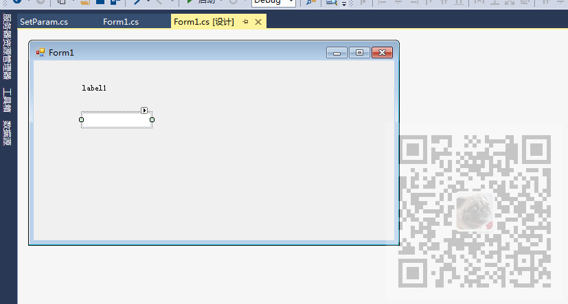
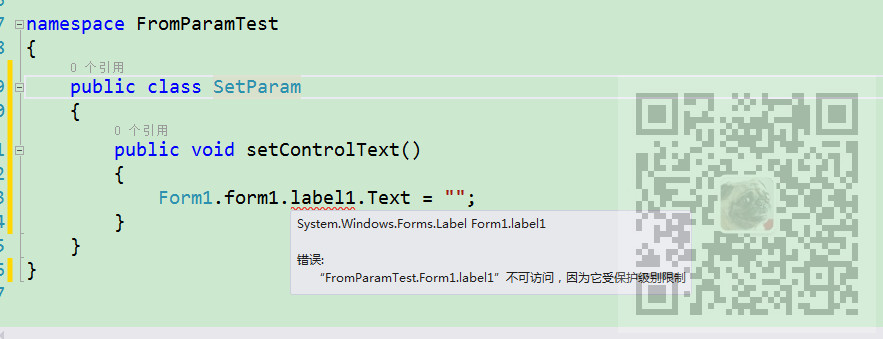
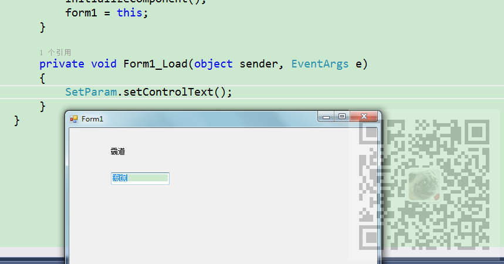

原文出处:本文由博客园博主霸道流氓提供。
原文连接:https://www.cnblogs.com/badaoliumangqizhi/p/11940334.html
原文连接:https://www.cnblogs.com/badaoliumangqizhi/p/11940334.html
场景
需求是在窗体加载完成后掉用工具类的方法，工具类中获取窗体的多个控件对象进行赋值。
注:
博客主页：
https://blog.csdn.net/badao_liumang_qizhi
关注公众号
霸道的程序猿
获取编程相关电子书、教程推送与免费下载。
实现
新建一个窗体程序，在窗体Forn1中拖拽一个label控件和TextBox控件。

然后进入到窗体的代码中
在构造方法前声明静态类变量
public static Form1 form1 = null;在构造方法中将当前窗体赋值给上面声明的变量
public Form1()
{
InitializeComponent();
form1 = this;
}窗体完整代码：
using System;
using System.Collections.Generic;
using System.ComponentModel;
using System.Data;
using System.Drawing;
using System.Linq;
using System.Text;
using System.Threading.Tasks;
using System.Windows.Forms;
namespace FromParamTest
{
public partial class Form1 : Form
{
public static Form1 form1 = null;
public Form1()
{
InitializeComponent();
form1 = this;
}
private void Form1_Load(object sender, EventArgs e)
{
SetParam.setControlText();
}
}
}
新建工具类setParam
using System;
using System.Collections.Generic;
using System.Linq;
using System.Text;
using System.Threading.Tasks;
namespace FromParamTest
{
public class SetParam
{
public static void setControlText()
{
Form1.form1.label1.Text = "霸道";
Form1.form1.textBox1.Text = "流氓";
}
}
}此时通过窗体类调用静态的窗体变量，进而调用控件对象时会提示如下

这是因为控件默认是保护级别的，即所属窗体私有的，要修改控件的modifilers属性改为public。
来到窗体设计页面，右键控件-属性
然后双击窗体进入窗体的load事件中
在窗体加载完的方法中调用工具类的方法
private void Form1_Load(object sender, EventArgs e)
{
SetParam.setControlText();
}运行效果
